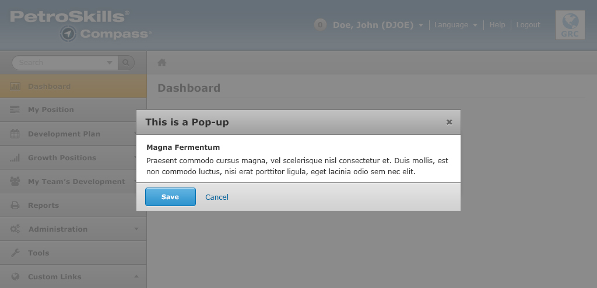

Pop-ups
Pop-ups simplify site functions by appearing as an overlay over existing page content. They may exist as one or multiple steps. They adopt the same rules as normal page content but feature a header and a close button. The background page 'dims' while dialogs are active. A black layer #000000 at 80% is used to create this effect.
Name of popup in the grey title bar portion, and short instructions in the content area below. The pop-up will not contain branding as in the previous versions of the application.
If the object name is required in the pop-up it will be displayed using the strong tag and is the first item in the content area.
Buttons must be left-aligned as shown in the screenshot
All pop-ups will have a maximum of 2 buttons, see description for the different types of pop-ups below.
Popup that changes data - Save (blue button) saves the changes made and closes the pop-up. Cancel(link) closes the pop-up without saving the changes.
When a user clicks save and the data entered is invalid the error will be displayed as per the Error States section , please refer to the forms page. The user can then edit the fields for the incorrect data and click save again.
Information Only popup - Ok(blue button) closes the pop-up.
Pop-up that provides navigation - Ok (blue button) closes the pop-up and redirects the user to the desired page. Cancel(link) closes the pop-up and returns the user to the page that launched the pop-up.
Pop-up Forms
Forms should be shown as top-aligned forms inside a pop-up window, which is displayed below. For more information on form styles, please refer to the forms page.
Errors should be handled the same in page forms as in pop-up forms, please refer to the forms page
Top-aligned Form Labels

For more information about form usability, please refer to this article posted by Luke W.